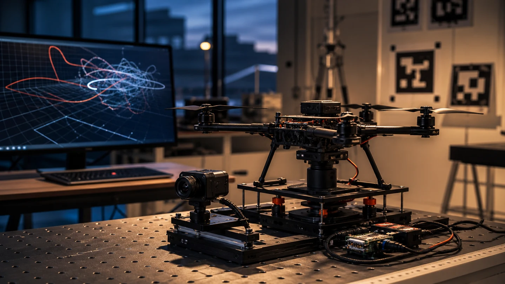
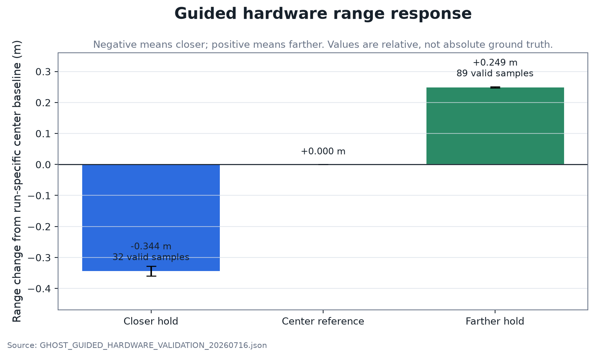
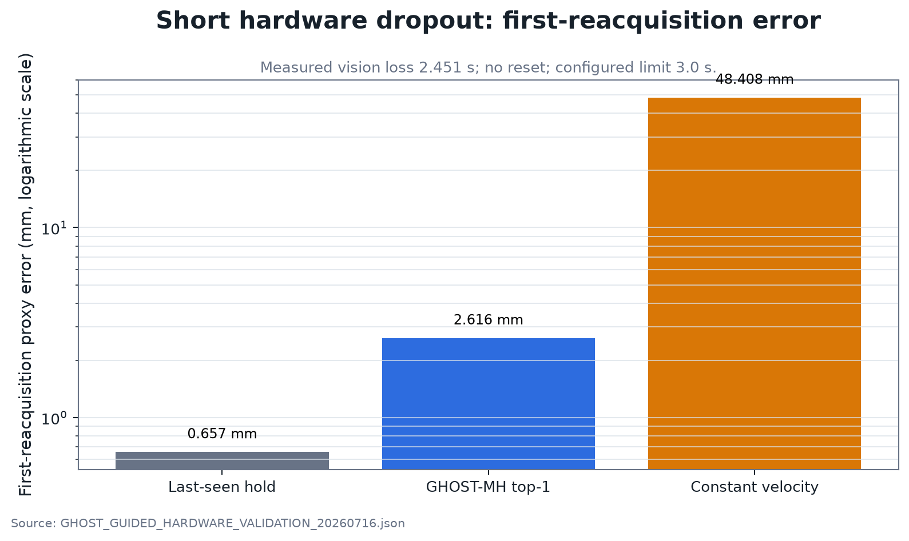
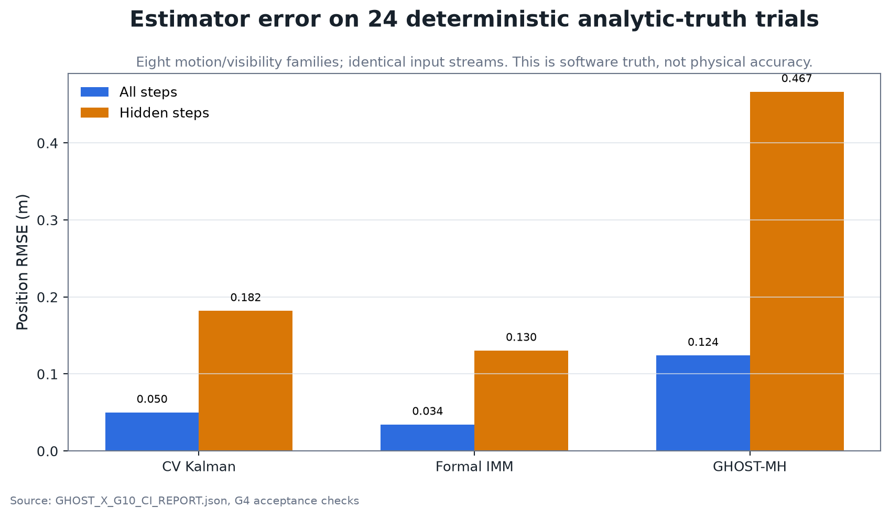
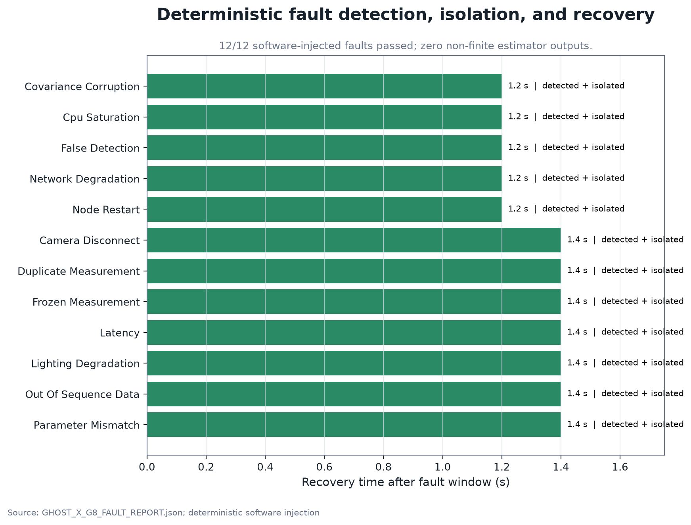
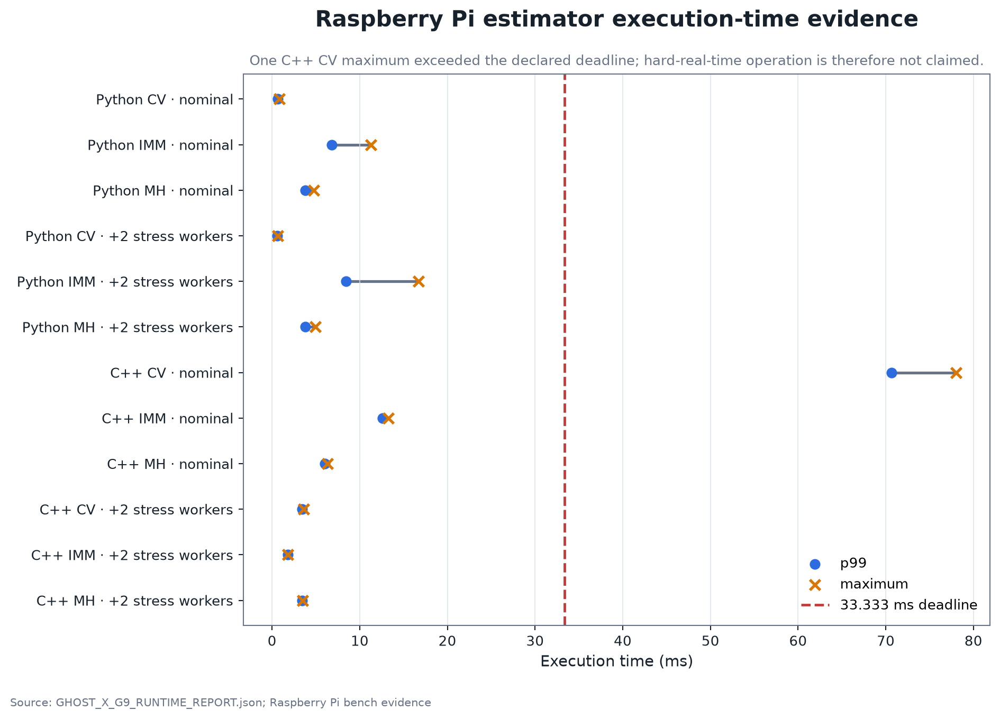
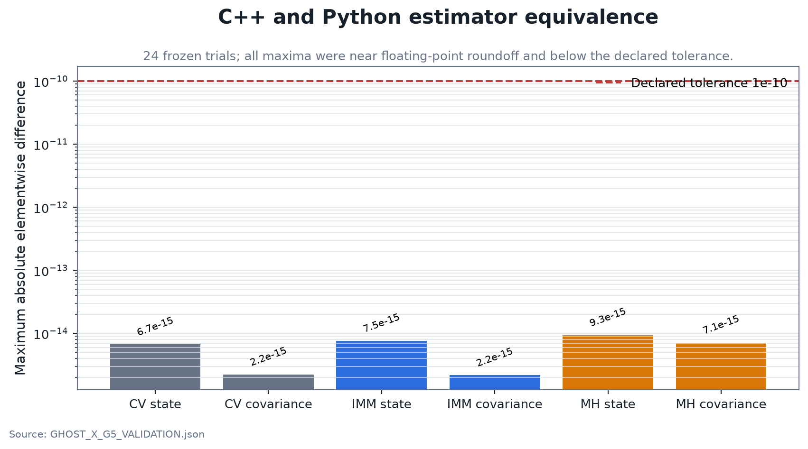

GHOST-X
TARGET ESTIMATION · VISUAL OCCLUSION · ROS 2 · RASPBERRY PI · CLOSED-LOOP SIL
GHOST-X propagates target state and uncertainty through visual occlusion, reports prediction-only status, and reacquires measurements when visibility returns. Hardware behavior and controlled-simulation accuracy are reported separately.

01Results you can inspect
These are repository-generated plots, not decorative mockups. Each caption states whether the evidence came from the Raspberry Pi hardware campaign, deterministic analytic reference data or runtime characterization.

Directional range response
The closer retest produced 32 valid hold samples and a −0.344 m change from its run-specific center baseline; the farther hold produced 89 samples and a +0.249 m change. This establishes direction, not metrology-grade position accuracy.
Open source plot
Short-dropout reacquisition
A 2.451 s vision gap reacquired without reset inside the configured 3.0 s envelope. GHOST-MH beat constant velocity in this stationary-target proxy, but the simpler last-seen hold was best; universal superiority is not supported.
Open source plot
Estimator RMSE
Across 24 accepted trials in eight scenario families, the formal IMM recorded 0.0344 m overall and 0.1305 m hidden-step RMSE. These are frozen reference-model results, not physical camera accuracy.
Open source plot
Fault handling
All 12 deterministic cases passed their declared detection, isolation, explicit-status and recovery checks, with no non-finite outputs. The campaign verifies software response paths; it is not physical fault qualification.
Open source plot
Deadline evidence
Eleven of 12 measured maximum-execution rows were below 33.333 ms; one C++ constant-velocity maximum was not. Broader publication and latency bounds also missed, so GHOST-X makes no hard-real-time claim.
Open source plot
C++ / Python equivalence
Across 24 frozen trials, maximum elementwise state and covariance differences stayed below the declared 1e−10 tolerance. This demonstrates implementation agreement for pinned inputs, not physical model accuracy.
Open source plotRun the estimator yourself
Set an occlusion length, switch IMM mixing off, and watch what the filter does to its own uncertainty while it has nothing to measure. The 3.0 s prediction envelope and the supervisor states are the ones described in the architecture section below.
The faint dot leading your cursor around this site is the same idea: a constant-velocity filter predicting where the pointer will be a moment from now. Move fast and it runs ahead; stop and it converges. That convergence is what the estimator below does to a target.
This model needs JavaScript. Everything it demonstrates is described in the sections below.
02Problem
A camera-based tracker has an abrupt failure mode: the target disappears behind an obstruction and the measurement stream becomes empty. A useful estimator must distinguish measurement-backed tracking from prediction, propagate uncertainty honestly while hidden, and reacquire without pretending that a software prediction is a physical measurement.
GHOST-X focuses on relative target-state estimation under that condition. It is not presented as a general VIO/SLAM system or a flight-qualified navigation solution.
03Current architecture
The published target-estimation path uses a formal Interacting Multiple Model (IMM) estimator alongside a bounded GHOST-MH comparison architecture. AprilTag pose measurements enter the target-estimation path; the estimators expose state, covariance or ranked hypotheses, measurement age and dropout context.
The repository also contains a portable C++ attitude ESKF and CV/CTRV filter components. Those are supporting components. The attitude ESKF is not the headline target tracker used to summarize the current published target-estimation results.
| Layer | Role | Evidence type |
|---|---|---|
| Camera / AprilTag | Relative pose measurements | Raspberry Pi hardware |
| Formal IMM | Probabilistic model mixing for target state | Deterministic reference model + replay |
| GHOST-MH | Bounded comparison / alternative futures | Deterministic comparison + hardware replay |
| Control supervisor | TRACKING / PREDICTION / SAFE_HOLD behavior | Closed-loop SIL |
04Validation tiers
Raspberry Pi + USB camera + AprilTag measurements with simultaneous estimator output and real measurement gaps. This demonstrates execution, directional response, dropout and reacquisition behavior.
Frozen deterministic scenarios provide known reference states so estimator error and consistency can be evaluated without presenting those numbers as physical accuracy.
The estimator is placed inside a relative-standoff guidance/control loop with actuator and follower dynamics plus a prediction/safe-hold supervisor.
The separation is deliberate: a millimeter-scale SIL final error is a software result, not evidence that the physical camera system is millimeter accurate.
05What is verified
- Public result generation is reproducible from recorded project files.
- Deterministic replay compares estimator behavior against known reference states.
- Closed-loop SIL exercises nominal, temporary-dropout and longer-dropout/safe-hold behavior.
- Release evidence is packaged with machine-readable provenance and SHA-256 integrity records.
The source repository remains the authority if the implementation evolves beyond this release snapshot.
06Negative results retained
The project keeps cases that weaken the headline rather than deleting them. A stationary-hold baseline beat GHOST-MH in one guided hardware dropout condition, some trial attempts were rejected, and some runtime or validation targets were not met. Those results are useful because they identify where estimator complexity is and is not justified.
These results define when added estimator complexity is justified and which regressions the test gates should catch.
07Claim boundary
- Raspberry Pi / ROS 2 measurement and estimator pipeline
- Target prediction through real measurement loss
- Deterministic estimator evaluation on known reference states
- Closed-loop software behavior
- Reproducible replay, regression and evidence packaging
- Metrology-grade physical accuracy
- Universal superiority of one tracker
- General object tracking beyond the declared measurement setup
- VIO / SLAM
- PX4 flight integration or autonomous flight qualification
- Hard-real-time or certification claims
08Engineering skills demonstrated
Estimation: state and covariance reasoning, multiple-model estimation, dropout recovery, and observability.
Closed-loop integration: evaluating the estimator inside a simulated control loop rather than only in isolation.
Verification: deterministic reference cases, regression tests, replay, and explicit failure cases.
Engineering judgment: separating hardware validation from software verification and limiting claims to what the results support.